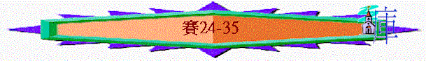

|
在 黑 暗 時 代 中 的 信 息（1-66） |
|||||
|
在變質國度中的斥責 |
在君亡噩訊中的異象 |
在無助孤身中的應許 |
在爭戰世界中的預言 |
在危難困境中的經歷 |
在暗淡前景中的安慰 |
|
1-5 |
6 |
7-12 |
13-35 |
36-39 |
40-66 |
1.在爭戰氣氛下的預言(13-23)----針對他們不仰望主
2.在不義世界中的審判(24-35)----針對當時世代不義
＊字眼：多『威嚴』，『不再蒙羞』，『公義』，『公正』，『不義』，『罪』，『禍哉』，『審判』等字眼
＊問題：『地被其上的居民污濊，因為他們犯了律法，廢了律例，背了永約』（24:5）
＊神審判人的目的－－>懲罰人（24:21）
－－>叫人學習公義（26:10）
－－>顯出祂的威嚴（26:10）
－－>叫人抱愧（26：11）
＊真理重點：神是公義的審判者，祂有祂的威嚴，人要行義不能得罪祂
「地上悲哀衰殘，世界敗落衰殘；地上居高位的人也敗落了。地被其上的居民污穢；因為他們犯了律法，廢了律例，背了永約。」24:4-5
A.全地衰敗的宣告----引出審判(24:1-16)
a.地的荒涼(24:1-3)
「看哪，耶和華使地空虛，變為荒涼；又翻轉大地，將居民分散。那時百姓怎樣，祭司也怎樣；僕人怎樣，主人也怎樣；婢女怎樣，主母也怎樣；買物的怎樣，賣物的也怎樣；放債的怎樣，借債的也怎樣；取利的怎樣，出利的也怎樣。地必全然空虛，盡都荒涼；因為這話是耶和華說的。」24:1-3
∼「出利的」指負債者，神向全地宣告將來地必荒涼，無論甚麼階層、身份的人也要經歷荒涼日子
b.人的敗落(24:4-6)
「地上悲哀衰殘，世界敗落衰殘；地上居高位的人也敗落了。地被其上的居民污穢；因為他們犯了律法，廢了律例，背了永約。」24:4-5
∼因人心的污穢，不守神的律例，所以遭神管教
c.歡樂失去(24:7-13)
「新酒悲哀，葡萄樹衰殘；心中歡樂的俱都歎息。擊鼓之樂止息；宴樂人的聲音完畢，彈琴之樂也止息了。」24:7-8
「在街上因酒有悲歎的聲音；一切喜樂變為昏暗；地上的歡樂歸於無有。」24:11
∼人間一切的歡樂也變為悲哀
d.榮耀卻臨(24:14
「這些人要高聲歡呼；他們為耶和華的威嚴，從海那裡揚起聲來。因此，你們要在東方榮耀耶和華；在眾海島榮耀耶和華以色列神的名。我們聽見從地極有人歌唱，說：榮耀歸於義人。我卻說：我消滅了！我消滅了，我有禍了！詭詐的行詭詐；詭詐的大行詭詐。」24:14-16
∼敗落人失去歡樂，但神的威嚴及榮耀卻降臨在人間，義人也因神而得榮耀；另外「要在東方」「在眾海島」可能是指從東至西，全地要稱頌神
B.審判日子的情景----描寫情景(24:16b-27:13)
a.惡人恐懼(24:16b-20)
「我們聽見從地極有人歌唱，說：榮耀歸於義人。我卻說：我消滅了！我消滅了，我有禍了！詭詐的行詭詐；詭詐的大行詭詐。地上的居民哪，恐懼、陷坑、網羅都臨近你。躲避恐懼聲音的必墜入陷坑；從陷坑上來的必被網羅纏住；因為天上的窗戶都開了，地的根基也震動了。」24:16-18
b.真神降臨(24:21-23)
「到那日，耶和華在高處必懲罰高處的眾軍，在地上必懲罰地上的列王。他們必被聚集，像囚犯被聚在牢獄中，並要囚在監牢裡，多日之後便被討罪（或作：眷顧）。那時，月亮要蒙羞，日頭要慚愧；因為萬軍之耶和華必在錫安山，在耶路撒冷作王；在敬畏他的長老面前，必有榮耀。」24:21-23
∼「高處的軍隊」可能指堕落的天使，神要懲罰牠們
∼「月亮要蒙羞」----神的榮耀降臨下，日月也變得黯然失色
∼「長老」可能指管理神百姓的人
∼神降臨地上，必在耶路撒冷作王
c.義人歡呼
＊很多歡呼字眼，ｅｇ『角聲』『快樂』『歌唱』『稱讚』．．．．
(1)第一段歡呼----讚歎神的忠信
「耶和華啊，你是我的神；我要尊崇你，我要稱讚你的名。因為你以忠信誠實行過奇妙的事，成就你古時所定的。」25:1
∼「忠信」代表神的信實，祂在眾先知書及賽13-23對列邦所定的預言，
(A)必要成就----使外邦城荒涼
「你使城變為亂堆，使堅固城變為荒場，使外邦人宮殿的城不再為城，永遠不再建造。」25:2
(B)必成就-----除去選民羞辱
「他已經吞滅死亡直到永遠。主耶和華必擦去各人臉上的眼淚，又除掉普天下他百姓的羞辱，因為這是耶和華說的。」25:8
(C)必成就----使摩押受審判
「耶和華的手必按在這山上；摩押人在所居之地必被踐踏，好像乾草被踐踏在糞池的水中。」25:10
(2)第二段歡呼(26)----讚歎神的穩妥
(A)神將救恩定為城牆
「當那日，在猶大地人必唱這歌說：我們有堅固的城。耶和華要將救恩定為城牆，為外郭。敞開城門，使守信的義民得以進入。」26:1-2
(B)神是他們永久磐石
「你們當倚靠耶和華直到永遠，因為耶和華是永久的磐石。」26:4
(C)神除去他們的仇敵
「耶和華啊，你必派定我們得平安，因為我們所做的事都是你給我們成就的。耶和華我們的神啊，在你以外曾有別的主管轄我們，但我們專要倚靠你，提你的名。他們死了，必不能再活；他們去世，必不能再起；因為你刑罰他們，毀滅他們，他們的名號就全然消滅。」26:12-14
「我的百姓啊，你們要來進入內室，關上門，隱藏片時，等到忿怒過去。因為耶和華從他的居所出來，要刑罰地上居民的罪孽。地也必露出其中的血，不再掩蓋被殺的人。」26:20-21
(3)第三段歡呼(27)----讚歎神的能力
(A)神因大能刑罰仇敵
「到那日，耶和華必用他剛硬有力的大刀刑罰鱷魚，就是那快行的蛇，刑罰鱷魚，就是那曲行的蛇，並殺海中的大魚。」27:1
∼「曲行的蛇」：「快行的蛇」可能指米所波大米的雙子河，代表巴比倫與亞述，他們也用「鱷魚」代表
∼「海中的大魚」可能指埃及(埃及有尼羅河)
(B)神使以色列有力量
「我心中不存忿怒。惟願荊棘蒺藜與我交戰，我就勇往直前，把他一同焚燒。」27:4
(C)神用大能管教選民
「主擊打他們，豈像擊打那些擊打他們的人嗎？他們被殺戮，豈像被他們所殺戮的嗎？你打發他們去，是相機宜與他們相爭；颳東風的日子，就用暴風將他們逐去。所以，雅各的罪孽得赦免，他的罪過得除掉的果效，全在乎此：就是他叫祭壇的石頭變為打碎的灰石，以致木偶和日像不再立起。因為堅固城變為淒涼，成了撇下離棄的居所，像曠野一樣；牛犢必在那裡吃草，在那裡躺臥，並吃盡其中的樹枝。枝條枯乾，必被折斷；婦女要來點火燒著。因為這百姓蒙昧無知，所以，創造他們的必不憐恤他們；造成他們的也不施恩與他們。」27:7-11
∼神也會用能力擊打管教選民，堅固拜偶像的石頭也被打碎，木偶也被打倒，堅固地也全然荒涼，但神仍有恩典，使他們不至像外邦消滅，將來罪仍得除掉
∼而「東風」可能指巴比倫或亞述
(D)神用大能拯救選民
「以色列人哪，到那日，耶和華必從大河，直到埃及小河，將你們一一的收集，如同人打樹拾果一樣。當那日，必大發角聲，在亞述地將要滅亡的，並在埃及地被趕散的，都要來，他們就在耶路撒冷聖山上敬拜耶和華。」27:12-13
C.禍患來臨的原因-----指明不義(28-33)
＊很多『禍哉』字眼，每禍哉來臨，都說明他們遭禍的原因
a.高傲無知(28)
(1)北國的高傲
「禍哉！以法蓮的酒徒，住在肥美谷的山上，他們心裡高傲，以所誇的為冠冕，猶如將殘之花。看哪，主有一大能大力者，像一陣冰雹，像毀滅的暴風，像漲溢的大水，他必用手將冠冕摔落於地。」28:1-2
∼以法蓮指北國，他們如酒徒一樣愛誇耀自己，但神用亞述大能者將他們摔倒
∼「肥美谷」應指撒瑪利亞
(2)南國的褻慢
(A)藐視職任
「就是這地的人也因酒搖搖晃晃，因濃酒東倒西歪。祭司和先知因濃酒搖搖晃晃，被酒所困，因濃酒東倒西歪。他們錯解默示，謬行審判。」28:7
∼南國也如此，他們的祭司應尊重自己的職任，傳講神的律法，及作出公義審判，但他們卻藐視神的託負，錯解默示，謬行審判
(B)譏誚神僕
「譏誚先知的說：他要將知識指教誰呢？要使誰明白傳言呢？是那剛斷奶離懷的嗎？」28:9
∼他也譏誚以賽亞的教訓
(C)自誇安穩
「所以，你們這些褻慢的人，就是轄管住在耶路撒冷這百姓的，要聽耶和華的話。你們曾說：我們與死亡立約，與陰間結盟；敵軍（原文作鞭子）如水漲漫經過的時候，必不臨到我們；因我們以謊言為避所，在虛假以下藏身。」28:14-15
(3)真神的管教
(A)是公義的
「所以，主耶和華如此說：看哪，我在錫安放一塊石頭作為根基，是試驗過的石頭，是穩固根基，寶貴的房角石；信靠的人必不著急。我必以公平為準繩，以公義為線鉈。冰雹必沖去謊言的避所；大水必漫過藏身之處。你們與死亡所立的約必然廢掉，與陰間所結的盟必立不住。敵軍（原文作鞭子）如水漲漫經過的時候，你們必被他踐踏；」28:16-18
「耶和華必興起，像在毗拉心山；他必發怒，像在基遍谷，好做成他的工，就是非常的工；成就他的事，就是奇異的事。」28:21
「就如經上所記：我在錫安放一塊絆腳的石頭，跌人的磐石；信靠他的人必不至於羞愧。」羅9:33
「因為經上說：看哪，我把所揀選、所寶貴的房角石安放在錫安；信靠他的人必不至於羞愧。所以，他在你們信的人就為寶貴，在那不信的人有話說：匠人所棄的石頭已作了房角的頭塊石頭。」彼前2:6-7
∼「神在錫安放一塊石頭」----代表神為選民預備了一個試驗的安排，若倚靠神必得穩固，若行惡不信的，必立不住，神必攻擊他們
∼而此段更預表耶穌是那塊石頭，信靠祂的人必得救，不信的，主必審判他們
∼「毗拉心山」是神昔日幫助百姓擊敗非利士人之地，另在「基遍谷」殺敗迦南五王，昔日神興起幫助他們，也可因他們不義而攻擊他們
∼神是公義的，倚靠祂的得堅固，不信行惡的必被擊打
(B)是有智慧的
「那耕地為要撒種的，豈是常常耕地呢？豈是常常開墾耙地呢？他拉平了地面，豈不就撒種小茴香，播種大茴香，按行列種小麥，在定處種大麥，在田邊種粗麥呢？因為他的神教導他務農相宜，並且指教他。原來打小茴香，不用尖利的器具，軋大茴香，也不用碌碡（原文作車輪；下同）；但用杖打小茴香，用棍打大茴香。做餅的糧食是用磨磨碎，因他不必常打；雖用碌碡和馬打散，卻不磨他。這也是出於萬軍之耶和華他的謀略奇妙；他的智慧廣大。」28:24-29
∼「茴香」別名八角珠有強烈香氣的植物
∼此段是講述農夫在耕種時會有智慧地按時間、計劃，適合的方法及工具耕種
∼神對選民的管教也是有智慧、有定時、有最公義合式的安排
(C)是奇妙的
∼前文講及神的謀略是奇妙的，而此段形容神也用奇妙的作為攻擊耶路撒冷(令自誇的選民萬料不到的)
(a)保障----必被攻破
「唉！亞利伊勒，亞利伊勒，大衛安營的城，任憑你年上加年，節期照常周流。」29:1
「那時，攻擊亞利伊勒列國的群眾，就是一切攻擊亞利伊勒和他的保障，並使他困難的，必如夢景，如夜間的異象；又必像飢餓的人夢中吃飯，醒了仍覺腹空；或像口渴的人夢中喝水，醒了仍覺發昏，心裡想喝。攻擊錫安山列國的群眾也必如此。」29:7-8
∼「亞利伊勒」意思是祭壇的爐，指耶路撒冷，他們認為此地是他們宗教守節之地，有堅固的城牆作保障，但神仍奇妙地令所有保障變徒然，終被外邦所攻擊
(b)智者----必然隱藏
「因為耶和華將沉睡的靈澆灌你們，封閉你們的眼，蒙蓋你們的頭。你們的眼就是先知；你們的頭就是先見。所有的默示，你們看如封住的書卷，人將這書卷交給識字的，說：「請念吧！」他說：「我不能念，因為是封住了。」」29:10-11
「所以，我在這百姓中要行奇妙的事，就是奇妙又奇妙的事。他們智慧人的智慧必然消滅，聰明人的聰明必然隱藏。」29:14
∼他們自以為預知將來必平安，自以為可以有智慧謀略應付敵人，誰不知，神可以封住他們的智慧，他們得不到神的啟示，他們的方法也變為愚昩
b.顛倒是非(29)
「禍哉！那些向耶和華深藏謀略的，又在暗中行事，說：誰看見我們呢？誰知道我們呢？你們把事顛倒了，豈可看窯匠如泥嗎？被製作的物豈可論製作物的說：他沒有製作我？或是被創造的物論造物的說：他沒有聰明？」29:15-16
「謙卑人必因耶和華增添歡喜；人間貧窮的必因以色列的聖者快樂。」29:19
「他們在爭訟的事上定無罪的為有罪，為城門口責備人的設下網羅，用虛無的事屈枉義人。」29:21
∼他們自以為有智慧，自以為神不會看見他們的不義，也認為神沒有能力及智慧，將真實的神及真實的一面顛倒，也定無罪為有罪，神必追他們的罪，使自卑的人升高，褻慢的滅絕
c.悖逆偏離(30)
(1)他們的悖逆
(A)不尋求神的幫助
「耶和華說：禍哉！這悖逆的兒女。他們同謀，卻不由於我，結盟，卻不由於我的靈，以致罪上加罪；起身下埃及去，並沒有求問我；要靠法老的力量加添自己的力量，並投在埃及的蔭下。」30:1-2
∼當時亞述大軍南下，他們曾差遣使者下埃及幫助，但沒有求問真正的神
(B)不聽真神的教誨
「現今你去，在他們面前將這話刻在版上，寫在書上，以便傳留後世，直到永永遠遠。因為他們是悖逆的百姓、說謊的兒女，不肯聽從耶和華訓誨的兒女。他們對先見說：不要望見不吉利的事，對先知說：不要向我們講正直的話；要向我們說柔和的話，言虛幻的事。」30:8-10
∼神要以賽亞將祂的話刻在版上，見證他們的不是，他們只願聽順耳的言語，神對他們的忠言，卻不肯聽
(C)不肯歸回安息路
「主耶和華以色列的聖者曾如此說：你們得救在乎歸回安息；你們得力在乎平靜安穩；你們竟自不肯。你們卻說：不然，我們要騎馬奔走。所以你們必然奔走；又說：我們要騎飛快的牲口。所以追趕你們的，也必飛快。」30:15-16
∼真正能使他們得解困及得安穩的路，是歸回神那邊，不是要下埃及，不是作太多自己的謀算，而安靜不靠人的力量來到神面前，但他們卻不肯，要騎馬往埃及尋求幫助，偏行己路！
(2)真神的回應
(A)管教他們
「故此，這罪孽在你們身上，好像將要破裂凸出來的高牆，頃刻之間忽然坍塌；」30:13
「一人叱喝，必令千人逃跑；五人叱喝，你們都必逃跑；以致剩下的，好像山頂的旗杆，岡上的大旗。」30:17
(B)施恩他們
「耶和華必然等候，要施恩給你們；必然興起，好憐憫你們。因為耶和華是公平的神；凡等候他的都是有福的！」30:18
∼神雖管教他們，但神仍等候施恩憐憫祂的百姓
(a)引導他們
「主雖以艱難給你當餅，以困苦給你當水，你的教師卻不再隱藏；你眼必看見你的教師。你或向左或向右，你必聽見後邊有聲音說：「這是正路，要行在其間。」你雕刻偶像所包的銀子和鑄造偶像所鍍的金子，你要玷污，要拋棄，好像污穢之物，對偶像說：「去吧！」」30:20-22
∼神至終會教導他們可得恩及回轉之法----就是要離棄偶像
(b)恩澤聖地
「你將種子撒在地裡，主必降雨在其上，並使地所出的糧肥美豐盛。到那時，你的牲畜必在寬闊的草場吃草。耕地的牛和驢駒必吃加鹽的料；這料是用木杴和杈子揚淨的。」30:23-24
(c)醫治他們
「當耶和華纏裹他百姓的損處，醫治他民鞭傷的日子，月光必像日光，日光必加七倍，像七日的光一樣。」30:26
∼日光必加七倍----可能指光景更勝之前
(d)擊打仇敵
「亞述人必因耶和華的聲音驚惶；耶和華必用杖擊打他。耶和華必將命定的杖加在他身上；每打一下，人必擊鼓彈琴。打仗的時候，耶和華必掄起手來，與他交戰。原來陀斐特又深又寬，早已為王預備好了；其中堆的是火與許多木柴。耶和華的氣如一股硫磺火使他著起來。」30:31-33
∼神必攻擊選民的敵人----亞述，而「陀斐特」是耶路撒冷南面山谷，以色列人曾在此地把女兒經火獻給異教，而將來神也要以亞述為祭，神的怒氣向他如火燒起般！
d.倚靠外邦(31-32)
(1)尋求外邦幫肋
「禍哉！那些下埃及求幫助的，是因仗賴馬匹，倚靠甚多的車輛，並倚靠強壯的馬兵，卻不仰望以色列的聖者，也不求問耶和華。其實，耶和華有智慧；他必降災禍，並不反悔自己的話，卻要興起攻擊那作惡之家，又攻擊那作孽幫助人的。」31:1-2
(2)不知神的能力
(A)神定能令埃及絆跌
「其實，耶和華有智慧；他必降災禍，並不反悔自己的話，卻要興起攻擊那作惡之家，又攻擊那作孽幫助人的。埃及人不過是人，並不是神；他們的馬不過是血肉，並不是靈。耶和華一伸手，那幫助人的必絆跌，那受幫助的也必跌倒，都一同滅亡。」31:2-3
(B)神定能保護以色列
「雀鳥怎樣搧翅（覆雛），萬軍之耶和華也要照樣保護耶路撒冷。他必保護拯救，要越門保守。」31:5
(C)神定能殺敗亞述人
「亞述人必倒在刀下，並非人的刀；有刀要將他吞滅，並非人的刀。他必逃避這刀；他的少年人必成為服苦的。」31:8
(D)神定能差遣王管治
「看哪，必有一王憑公義行政；必有首領藉公平掌權。」32:1
「冒失人的心必明白知識；結吧人的舌必說話通快。愚頑人不再稱為高明；吝嗇人不再稱為大方。」32:4-5
∼神會使一王(應指彌賽亞)行公義管治以色列，百姓也因此能分辨是非，惡人的惡謀惡行也會被顯露
(E)神定能管教安逸婦女們
「安逸的婦女啊，起來聽我的聲音！無慮的女子啊，側耳聽我的言語！無慮的女子啊，再過一年多，必受騷擾；因為無葡萄可摘，無果子（或作：禾稼）可收。安逸的婦女啊，要戰兢；無慮的女子啊，要受騷擾。脫去衣服，赤著身體，腰束麻布。」31:9-11
(F)神定能復興更新以色列
「等到聖靈從上澆灌我們，曠野就變為肥田，肥田看如樹林。那時，公平要居在曠野；公義要居在肥田。公義的果效必是平安；公義的效驗必是平穩，直到永遠。我的百姓必住在平安的居所，安穩的住處，平靜的安歇所。」31:15-18
f.毁滅別人(針對外邦人)
∼此段「毀滅的人」應是指亞述，在希西家(作王年間)，亞述曾大舉南下攻擊猶大，之前猶大的使者曾與他們求和，但亞述不守盟約，要攻下南國，所以聖經題及他們「詭詐」，不守信用。
(1)敵人的惡行
「禍哉！你這毀滅人的，自己倒不被毀滅；行事詭詐的，人倒不以詭詐待你。你毀滅罷休了，自己必被毀滅；你行完了詭詐，人必以詭詐待你。」33:1
「看哪，他們的豪傑在外頭哀號；求和的使臣痛痛哭泣。大路荒涼，行人止息；敵人背約，藐視城邑，不顧人民。」33:7-8
(2)選民的呼求
「耶和華啊，求你施恩於我們；我們等候你。求你每早晨作我們的膀臂，遭難的時候為我們的拯救。」33:2
(3)真神的興起
「耶和華說：現在我要起來；我要興起；我要勃然而興。你們要懷的是糠秕，要生的是碎稓；你們的氣就是吞滅自己的火。列邦必像已燒的石灰，像已割的荊棘在火中焚燒。」33:10-12
(4)罪人也懼怕
「你們要懷的是糠秕，要生的是碎稓；你們的氣就是吞滅自己的火。列邦必像已燒的石灰，像已割的荊棘在火中焚燒。你們遠方的人當聽我所行的；你們近處的人當承認我的大能。錫安中的罪人都懼怕；不敬虔的人被戰兢抓住。我們中間誰能與吞滅的火同住？我們中間誰能與永火同住呢？行事公義、說話正直、憎惡欺壓的財利、擺手不受賄賂、塞耳不聽流血的話，閉眼不看邪惡事的，」33:11-15
(5)榮耀將降臨
「你的眼必見王的榮美，必見遼闊之地。」33:17
「在那裡，耶和華必顯威嚴與我們同在，當作江河寬闊之地；其中必沒有盪槳搖櫓的船來往，也沒有威武的船經過。」33:21
∼「沒有蕩槳搖櫓的船」往來，可能指沒有外敵從水路入侵
D.萬國末後的結局----總結預言(34-35)
a.列國遭報應
(1)神要向列國發怒
「列國啊，要近前來聽！眾民哪，要側耳而聽！地和其上所充滿的，世界和其中一切所出的都應當聽！因為耶和華向萬國發忿恨，向他們的全軍發烈怒，將他們滅盡，交出他們受殺戮。」34:1-2
(2)神為以色列報仇
「因為我的刀在天上已經喝足；這刀必臨到以東和我所咒詛的民，要施行審判。耶和華的刀滿了血，用脂油和羊羔、公山羊的血，並公綿羊腰子的脂油滋潤的；因為耶和華在波斯拉有獻祭的事，在以東地大行殺戮。」34:5-6
「因耶和華有報仇之日，為錫安的爭辯有報應之年。」34:8
「晝夜總不熄滅，煙氣永遠上騰，必世世代代成為荒廢，永永遠遠無人經過。」34:10
∼在列國之中，以東是以色列仇敵的代表，一直以選民為敵人，神用此代表他的下場(被神擊殺，地土荒涼)，表明神會為錫安報仇的
(3)神所說的話必應驗
「你們要查考宣讀耶和華的書。這都無一缺少，無一沒有伴偶；因為我的口已經吩咐，他的靈將他們聚集。他也為他們拈鬮，又親手用準繩給他們分地；他們必永得為業，世世代代住在其間。」34:16-17
∼「耶和華的書」應指神透過以賽亞所寫下對世界的預言(無論是審判與復興)也必應驗
b.選民得復興(35)
(1)得榮美
「必開花繁盛，樂上加樂，而且歡呼。利巴嫩的榮耀，並迦密與沙崙的華美，必賜給他。人必看見耶和華的榮耀，我們神的華美。」35:2
(2)得剛強
「你們要使軟弱的手堅壯，無力的膝穩固。對膽怯的人說：你們要剛強，不要懼怕。看哪，你們的神必來報仇，必來施行極大的報應；他必來拯救你們。」35:3-4
(3)得醫治
「那時，瞎子的眼必睜開；聾子的耳必開通。那時，瘸子必跳躍像鹿；啞巴的舌頭必能歌唱。在曠野必有水發出；在沙漠必有河湧流。」35:5-6
(4)得歸回
「在那裡必有一條大道，稱為聖路。污穢人不得經過，必專為贖民行走；行路的人雖愚昧，也不至失迷。在那裡必沒有獅子，猛獸也不登這路；在那裡都遇不見，只有贖民在那裡行走。」35:8-9
(5)得永樂
「並且耶和華救贖的民必歸回，歌唱來到錫安；永樂必歸到他們的頭上；他們必得著歡喜快樂，憂愁歎息盡都逃避。」35:10